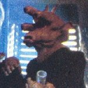

Menu:The Conspirators: |
Plot: Reason: Co-Conspirators: Action Taken: After awhile, The Empire approached Ree-Yees, possibly through the Tatooine Prefect, Talmont. He was told to kill Jabba and in return his murder charge would be wiped out. They would supply him with a bomb, which was smuggled into the palace in crates of Goat-Grass (Ree-Yees' food). He would then assemble the bomb and detonate it on his sail barge. He would also use a small transmitting device, implanted in Bobo, to communicate with the Empire. On the day that Princess Leia and Luke Skywalker came to rescue Han Solo, Ree-Yees needed only the detonator to complete the bomb. However the last shipment of Goat-Grass did not contain this vital component. He believed that someone now knew of his plot and stole the detonator, possibly to bribe him. After becoming drunk, Ree-Yees made his way, accidentally, to the B'ommar Monks part of the palace, deep underground. Here he met with one of the monks and had a vision. He saw a great explosion out in the desert. He believed this was the monk telling him he was destined to kill Jabba. He was no longer concerned about who stole the detonator because he knew that he would eventually kill Jabba. When Luke and Han were sent to the Sarlacc Pit, Ree-Yees thought it was safe to go along because he knew the bomb wasn't complete. However when he saw Leia killing Jabba he began to doubt the monk's vision. Jabba then tried to command Ree-Yees to kill Leia by attempting to detonate a bomb that Jabba had planted in the Gran's stomach. Perhaps the explosion he saw was this bomb. However Leia killed Jabba before the Hutt could finish the command and Ree-Yees was both delighted and confused. Was it not his destiny to kill Jabba? Minutes later as a huge explosion ripped through the Barge, Ree-Yees finally realised what the vision was, it was his own demise at the Pit of Carkoon. Outcome: My Opinion: Ree-Yees was unconcerned about the missing detonator, however. As far as he was concerned he was destined, eventually, to kill Jabba.
|
Off Site Links: |